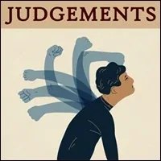
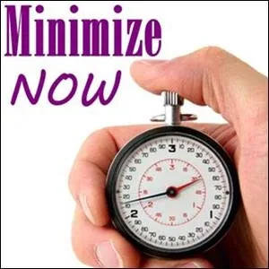
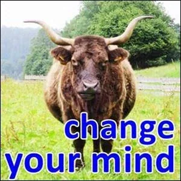
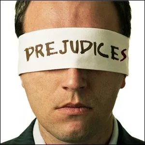
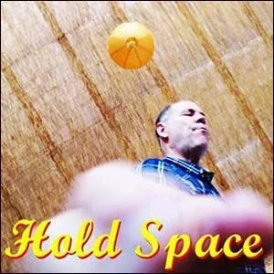

JUDGMENTS
JUDGMENTS
- Are your Judgments conscious? Or unconscious? - What is the Purpose behind each of your Judgments ? - Do you want to continue carrying the burden of each Judgment you previously made? - Why or why not? What is your Shadow World (Gremlin) benefit? - To ignore these simple yet profound questions is to disconnect yourself from the mechanics of Possibility.
- What Is A Judgement?- An "assumptions" is a memetic construct that is not required to be connected to reality. - Your Being can assume anything about anything. - It takes self observation and introspection to discern whether what you are using to think with (your thoughtware) is an Assumption or not. - Ignoring this distinction is like not checking to see if the book you are reading is fiction or nonfiction. - An Assumptions does not require you to look around inside of yourself at your internal reality - (for example, at your level of unconscious fear that is being covered up by the Assumption), - or to look around outside of yourself at external reality - (for example, at how the current level of methane in the atmosphere (1888 ppb in June 2020) equates to a global temperature of +12 degrees Centigrade higher than what has been average over the past 800,000 years). - In what circumstances did you make your Assumption? - Why do you keep yourself restrained by this Assumption? - What if you are finished with your Assumptions in the same way that a butterfly is finished with its cocoon as it flies into the world as an adult? - How can you do that?
- Clarity About Judgments- Facing into something that is ignored by your birth culture makes you fundamentally different from anyone not facing that thing. - Are you sure you want to do this? - You will see things differently. - You will be able to create unusually useful results. - As Robert A. Heinlein would say, - "One woman's magic is another woman's technology."- Taking apart your Assumptions is a kind of Inner Permaculture technology that creates magical results.

- Judgment Experiments- Judgments are like a wasps' nest full of assumptions. If you prick it, they will fly around your head.
 - 12 ANGRY MEN- Matrix Code JUDGMENT.01- Watch the movie „12 angry men“ starring Henry Fonda. - Notice how many - feelingsand- emotionscome up with each juror and name them.- What - prejudicesare being made and by whom?- After completing this experiment, please register Matrix Code - JUDGMENT.01in your free account at- StartOver.xyz.- This Experiment is worth 3 Matrix Points.
- 12 ANGRY MEN- Matrix Code JUDGMENT.01- Watch the movie „12 angry men“ starring Henry Fonda. - Notice how many - feelingsand- emotionscome up with each juror and name them.- What - prejudicesare being made and by whom?- After completing this experiment, please register Matrix Code - JUDGMENT.01in your free account at- StartOver.xyz.- This Experiment is worth 3 Matrix Points.  - IN COURT / PART 1- Matrix Code JUDGMENT.02- Attend a public court hearing. In Germany, this is possible.
Take a drawing pad and a pencil and make small drawings of the following people:
- IN COURT / PART 1- Matrix Code JUDGMENT.02- Attend a public court hearing. In Germany, this is possible.
Take a drawing pad and a pencil and make small drawings of the following people: - the defendant
- the judge
- the prosecutor
- the lawyer
- witnesses
Draw without looking at your paper. Look at the people instead.- After completing this experiment, please register Matrix Code - JUDGMENT.02in your free account at- StartOver.xyz.- This Experiment is worth 1 Matrix Point.

- IN COURT / PART 2- Matrix Code JUDGMENT.03- Attend another public court hearing. Everything that happens in court is for the- purposeof finding the truth. The experiment goes like this: Make a judgment about the defendant after every witness examination, after every presentation of evidence, after every statement and every- declarationmade by one of the people present. Allow your judgment to change several times during the trial. Write each new verdict in your- BEEP!Book, beginning each time with the words, "I find the defendant guilty because...." or "I find the defendant not guilty because..." At the end of the trial, you will have multiple guilty and/or acquittals on your paper. - After completing this experiment, please register Matrix Code - JUDGMENT.03in your free account at- StartOver.xyz.- This Experiment is worth 1 Matrix Point.
 - IN COURT / PART 3- Matrix Code JUDGMENT.04- Attend another public court hearing. - Noticewhat is not noticed by the people present. Everything that is in the room besides words, numbers, facts and evidence. For example,- feelingsand- emotions. You can note for each person what feelings/emotions you perceive in them.
You can note what consequences individual statements have, what effects they trigger.
You can note what benefits are there for each person.- Who benefits how from the crime, from the prosecution, from the trial, who benefits from an acquittal, who from a guilty verdict?
And there are quite a few little things to- noticethat have an impact on the verdict. Pull them out of the unconscious into the light - into your consciousness.- Small gestures, habits, external appearance, pauses in speech, eye contacts. - Write it all down. - After completing this experiment, please register Matrix Code - JUDGMENT.04in your free account at- StartOver.xyz.- This Experiment is worth 1 Matrix Point.
- IN COURT / PART 3- Matrix Code JUDGMENT.04- Attend another public court hearing. - Noticewhat is not noticed by the people present. Everything that is in the room besides words, numbers, facts and evidence. For example,- feelingsand- emotions. You can note for each person what feelings/emotions you perceive in them.
You can note what consequences individual statements have, what effects they trigger.
You can note what benefits are there for each person.- Who benefits how from the crime, from the prosecution, from the trial, who benefits from an acquittal, who from a guilty verdict?
And there are quite a few little things to- noticethat have an impact on the verdict. Pull them out of the unconscious into the light - into your consciousness.- Small gestures, habits, external appearance, pauses in speech, eye contacts. - Write it all down. - After completing this experiment, please register Matrix Code - JUDGMENT.04in your free account at- StartOver.xyz.- This Experiment is worth 1 Matrix Point. 
- JUDGMENT AND PREJUDICE- Matrix Code JUDGMENT.05- The difference between a judgment and a - prejudiceis that in a prejudice a- decisionis made without hearing the witnesses, without taking evidence, without hearing the defendant, and without letting the plaintiff speak. A prejudice is a judgment without a trial. If you think that this does not exist in our democratic system, you may be wrong. Prejudices are easy to make and some of them accompany us throughout our lives. For example, my mother used to say, "All Gypsies are criminals and thieves." When I was a child, there were often gypsies on the outskirts of our village in a meadow selling baskets. Because of my mother's sentence I was very afraid of these people and even today this judgment flares up in me like an old, almost extinguished ember. Write down 10 prejudices / judgments that you have adopted in your life. It can be from- parents, siblings, the pastor or teachers. How have these prejudices / judgments affected your life? How have they affected your attitude toward these people? What would have been possible without these prejudices / judgments?- After completing this experiment, please register Matrix Code - JUDGMENT.05in your free account at- StartOver.xyz.- This Experiment is worth 1 Matrix Point. - ASSUMPTIONS- Matrix Code JUDGMENT.06- Write down all the assumptions that are in your judgments. For example, in my judgment about Gypsies that I inherited from my mother was the assumption that the cars they drove around in were stolen goods.
What expectations followed from that? And what- resentments?- After completing this experiment, please register Matrix Code - JUDGMENT.06in your free account at- StartOver.xyz.- This Experiment is worth 1 Matrix Point.
- ASSUMPTIONS- Matrix Code JUDGMENT.06- Write down all the assumptions that are in your judgments. For example, in my judgment about Gypsies that I inherited from my mother was the assumption that the cars they drove around in were stolen goods.
What expectations followed from that? And what- resentments?- After completing this experiment, please register Matrix Code - JUDGMENT.06in your free account at- StartOver.xyz.- This Experiment is worth 1 Matrix Point.  - CULTURE-TO-CULTURE- Matrix Code JUDGMENT.07- Chooseone of the 10 prejudices /judgments that is still alive in you.
Go into contact with one of these people about whom you have a judgment and- talk to them. Who is this person? What does he think and feel and how did he get to where he is now? Open your heart to this person, what is he interested in, who does he love, what touches him, what does he like to eat, who are his friends?
The experiment consists in not meeting him like a zoo visitor standing in front of the plexiglass looking at a big ape. The experiment works only if there is no plexiglass. If you want someone to be naked, the best way is to undress yourself first.- After completing this experiment, please register Matrix Code - JUDGMENT.07in your free account at- StartOver.xyz.- This Experiment is worth 1 Matrix Point.
- CULTURE-TO-CULTURE- Matrix Code JUDGMENT.07- Chooseone of the 10 prejudices /judgments that is still alive in you.
Go into contact with one of these people about whom you have a judgment and- talk to them. Who is this person? What does he think and feel and how did he get to where he is now? Open your heart to this person, what is he interested in, who does he love, what touches him, what does he like to eat, who are his friends?
The experiment consists in not meeting him like a zoo visitor standing in front of the plexiglass looking at a big ape. The experiment works only if there is no plexiglass. If you want someone to be naked, the best way is to undress yourself first.- After completing this experiment, please register Matrix Code - JUDGMENT.07in your free account at- StartOver.xyz.- This Experiment is worth 1 Matrix Point. 
- SPEAK ABOUT IT- Matrix Code JUDGMENT.08- Should you have discarded your judgment after doing the - culture-to-cultureexperiment, the next experiment is to tell about it, not keep it to yourself. There are many ways to do this. - Invite the person for an- interviewand publish it.
- Write an- articleabout your experiment and publish it.
- Tell your family about it.
- Appear in public with the person about whom you had a judgment.
- Plan a worktalk with the person on the topic of culture-to-culture conversation.- After completing this experiment, please register Matrix Code - JUDGMENT.08in your free account at- StartOver.xyz.- This Experiment is worth 1 Matrix Point for every article, interview and worktalk.
- NOTE:This website is a- Bubble in the Bubble Mapof the free-to-play massively-multiplayer online-and-offline matrix-building thoughtware-upgrade context-shift personal-transformation game called- StartOver.xyz, powered by- Possibility Management. It is a- doorwayto- experimentsthat- upgrade your thoughtwareso you can- createmore- possibility. Your knowledge is what you think- about. Your- thoughtwareis what you use to think- with. When you- change your thoughtware, you go through a- liquid stateas your mind reorganizes itself. Liquid states can bring up transformational- feelingsand- emotions. By- upgrading your thoughtwareyou- build matrixto hold more- consciousness (archived — not captured). No one can do this for you. No one can stop you from doing it. Our theory is that when we- collectively buildone million more Matrix Points we will change the- morphogenetic fieldof the human race for the better. Please choose- responsiblyto read this website. Reading this whole website is worth 1 Matrix Point. Doing any of the experiments earns you additional Matrix Points. Please use Matrix Code- JUDGMENT.00to log your Matrix Points at- https://login.startover.xyz/. Thank you for playing full out!